여기는 정답이 전시되는 곳이 아닙니다.
아직 이름 붙지 않은 경험이 시작되는 곳입니다.
02 THE ATLAS / EXPLORE
서른여덟 개의 문.
각 작품은 서로 다른 질문에서 출발합니다. 마음이 끌리는 방향으로 입장하세요.
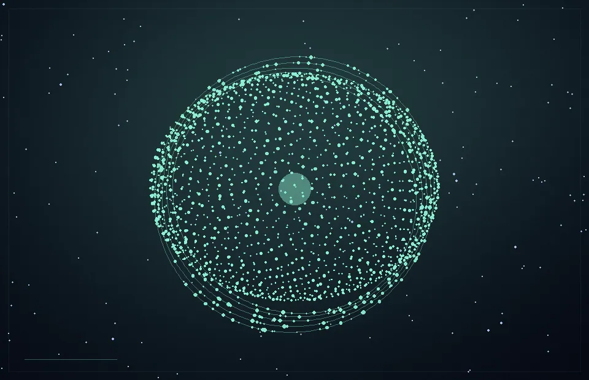
EXPEDITION / 01LIVING PARTICLESAETHER
생명의 언어
빛 입자들이 숨 쉬고 꽃피는 3차원 생명. 손짓으로 호흡·개화·궤도를 바꿉니다.
세계로 입장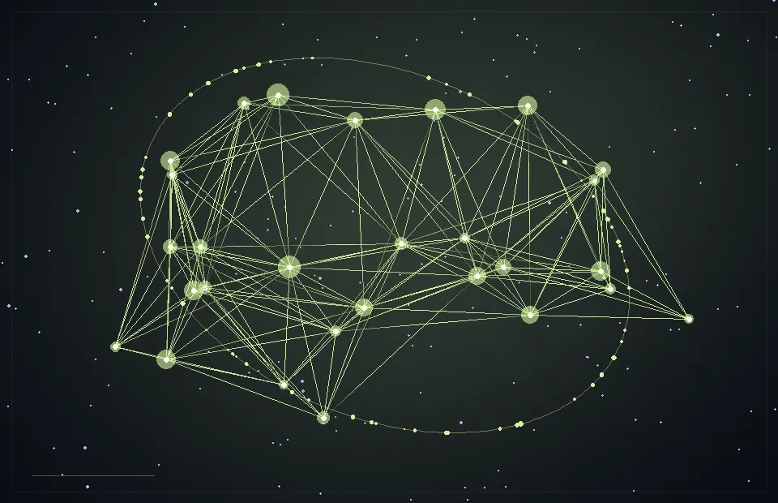
EXPEDITION / 02EVOLVING LIFEANIMA
살아있는 페이지
신경망을 가진 가상 개체들이 서로 반응하며 실시간으로 진화하는 생태계입니다.
세계로 입장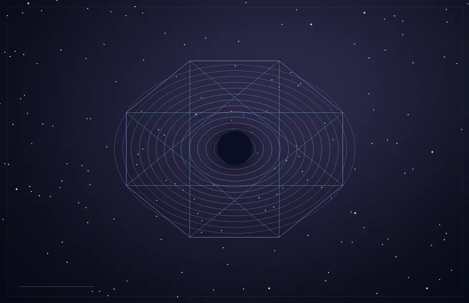
EXPEDITION / 03ATLAS OF THE UNIMAGINEDANOMALIA
상상력 바깥의 지도
사건의 안쪽에서 네 번째 방향까지. 다섯 세계를 건너 숨겨진 여섯 번째 세계를 해금합니다.
세계로 입장 EXPEDITION / 04THE PERSISTENT SKY
EXPEDITION / 04THE PERSISTENT SKY
AURORAMIND
당신이라는 우주
움직임으로 만들어진 별들이 남아 있는 개인 우주. 다시 돌아와도 별자리를 기억합니다.
세계로 입장 EXPEDITION / 05FIVE LENSES OF IDEAS
EXPEDITION / 05FIVE LENSES OF IDEAS
BEYOND
가능성의 틈
반전·삭제·증폭·결합·미래의 다섯 렌즈로 정답의 바깥에서 새로운 질문을 만듭니다.
세계로 입장 EXPEDITION / 06TRACES THAT REMAIN
EXPEDITION / 06TRACES THAT REMAIN
ENGRAM
관찰자의 귀환
20초 동안의 움직임이 별자리가 됩니다. 남긴 단어와 함께 기억 보관소에 담아봅니다.
세계로 입장 EXPEDITION / 07THOUGHT INTO MATTER
EXPEDITION / 07THOUGHT INTO MATTER
MINDSCAPE
상상력의 경계 너머
1,600개의 입자가 글자와 구체 사이를 오가며 움직임과 충격파에 반응합니다.
세계로 입장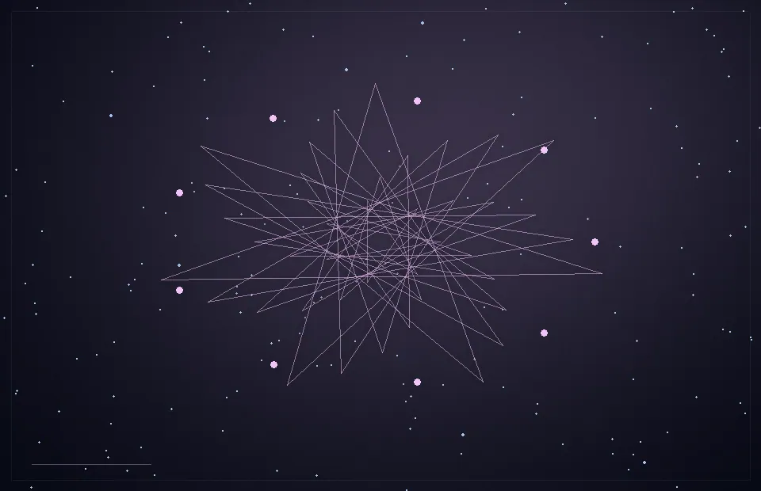
EXPEDITION / 08A UNIVERSE OF NAMESNAMES
이름의 우주
이름 하나를 씨앗으로 별자리를 탄생시키고, 그 우주의 시간을 직접 움직입니다.
세계로 입장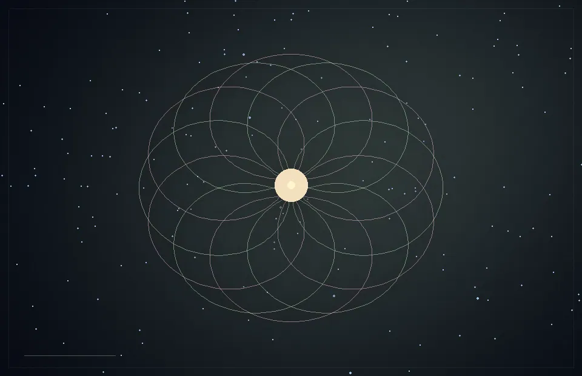
EXPEDITION / 09A GARDEN OF STARFLOWERSNOCTURNE
별의 정원
어둠 속에 별꽃을 심고, 꽃마다 깃든 시를 읽는 당신만의 작은 정원입니다.
세계로 입장 EXPEDITION / 10BEYOND PERCEPTION
EXPEDITION / 10BEYOND PERCEPTION
THE OUTSIDE
인지의 바깥
원환·접힘·기억·프랙털·지평선의 세계를 건너 여섯 번째 관측자 차원을 엽니다.
세계로 입장 EXPEDITION / 11WHO IS WATCHING WHOM
EXPEDITION / 11WHO IS WATCHING WHOM
SOMEONE
당신을 보고 있는 웹사이트
움직임에 깨어나는 미지의 존재. 약 60초 뒤에 누가 누구를 보고 있었는지 드러납니다.
세계로 입장 EXPEDITION / 12A ROOM FOR BREATHING
EXPEDITION / 12A ROOM FOR BREATHING
SUM
숨
빛의 흐름에 손을 얹고, 한 번 숨을 고르며 공간의 색을 바꾸는 고요한 방입니다.
세계로 입장 EXPEDITION / 13AN ARTISTIC PORTRAIT
EXPEDITION / 13AN ARTISTIC PORTRAIT
THE SITE THAT KNOWS YOU
당신을 닮은 별자리
움직임과 멈춤을 시각적인 별자리 초상화로 완성합니다. 성격 검사가 아닌 예술 경험입니다.
세계로 입장 EXPEDITION / 14CROSS THE INVISIBLE WALL
EXPEDITION / 14CROSS THE INVISIBLE WALL
THE THRESHOLD
뚫는 자의 기록
스크롤로 벽에 균열을 내고 빛을 쏟아내며 여섯 장면의 경계를 통과합니다.
세계로 입장 EXPEDITION / 15EMOTIONS YET UNNAMED
EXPEDITION / 15EMOTIONS YET UNNAMED
UNFELT
감정의 바깥
거리·무게·흔적·시간을 선택해 아직 존재하지 않던 감정의 이름을 탄생시킵니다.
세계로 입장 EXPEDITION / 16SIX GENERATIVE WORLDS
EXPEDITION / 16SIX GENERATIVE WORLDS
UNWRITTEN
아직 쓰이지 않은 세계
사건의 지평선부터 형광 정원, 기억의 바다, 가능성의 도시, 프랙털, 오로라까지.
세계로 입장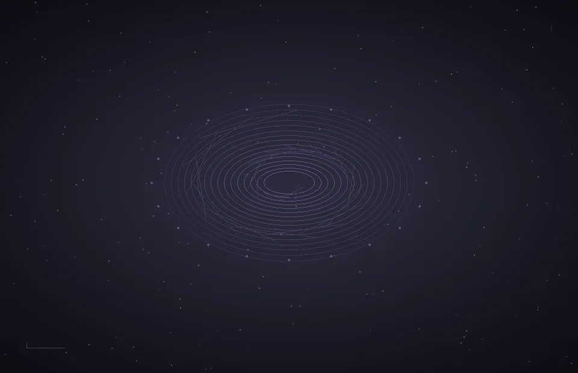
EXPEDITION / 17SEVEN ROOMS OF THOUGHTAION — THE BETWEEN
사이의 우주
관측·시간·생명·마음·인지·관계·무한의 일곱 방을 지나며 숨은 관찰자의 방을 발견합니다.
세계로 입장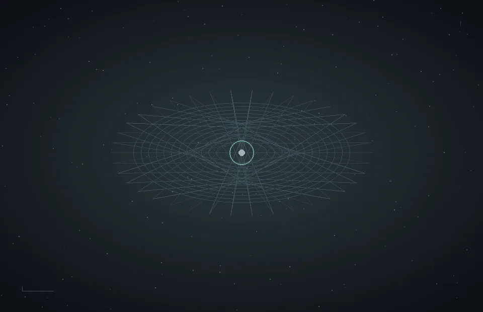
EXPEDITION / 18EIGHT REFLECTIONSMIRROR OF COGNITION
인지의 거울
움직임·흔적·호흡·시간·질문·기억·소멸·귀환을 여덟 장면으로 체험합니다.
세계로 입장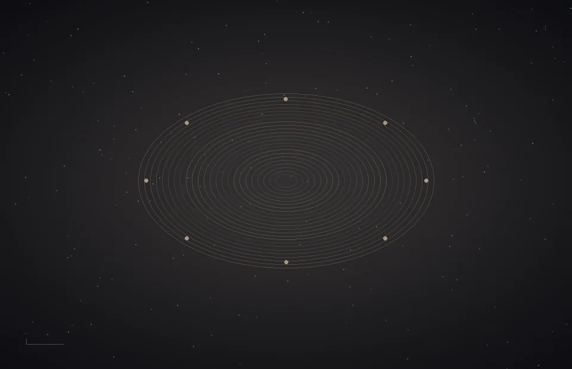
EXPEDITION / 19WHERE SILENCE BECOMES SPACETHE SPACE BETWEEN
여백의 우주
숨, 시간, 생명, 인식, 관계와 여운을 통과하며 조용한 편지를 만드는 일곱 공간입니다.
세계로 입장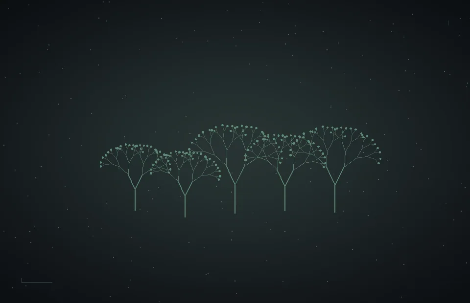
EXPEDITION / 20SEEDS THAT GROW WITH TIMEBETWEEN — THE GARDEN
시간이 머무는 정원
빛의 씨앗을 심으면 브라우저를 닫아 둔 동안의 시간까지 계산해 다시 자란 모습으로 만납니다.
세계로 입장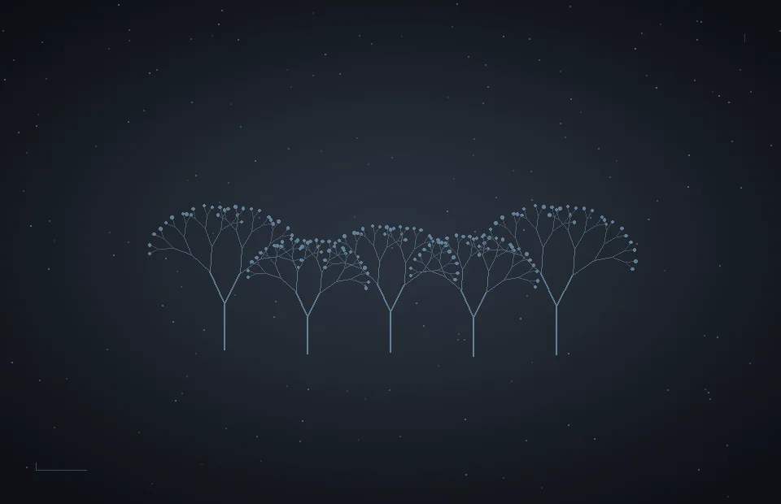
EXPEDITION / 21A GARDEN THAT REMEMBERSBETWEEN — AWAKENING
당신이 보는 순간
손끝에서 프랙털 나무가 자라고, 새벽부터 심야까지 움직이는 시간 위에 기억의 별이 남습니다.
세계로 입장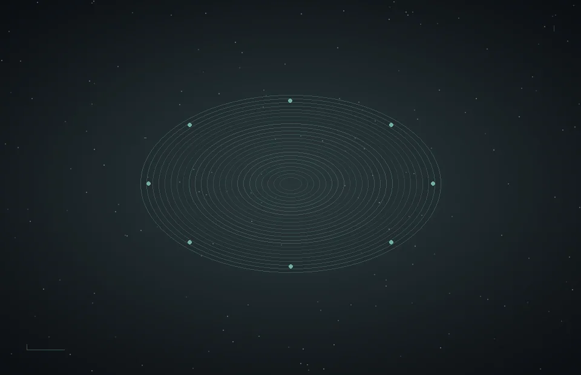
EXPEDITION / 22A WORLD THAT BREATHESBREATH
관찰될 때 피어나는 세계
머무름에는 빛의 뿌리가 자라고 움직임에는 입자가 흐릅니다. 별을 남기고 나만의 시를 만듭니다.
세계로 입장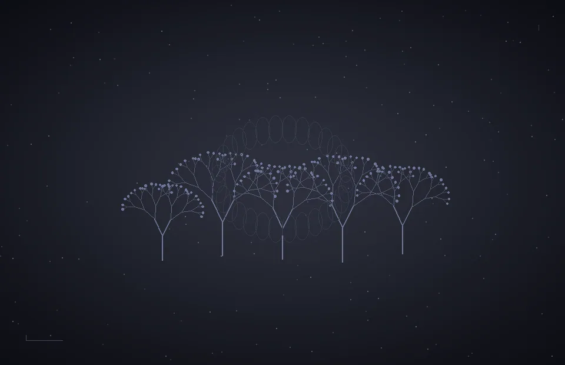
EXPEDITION / 23SIX GARDENS OF BEINGLIMEN — THE EDGE
존재의 가장자리
숨·시간·마음·생명·인식·관계의 정원을 지나 마지막에 나만의 문장을 만납니다.
세계로 입장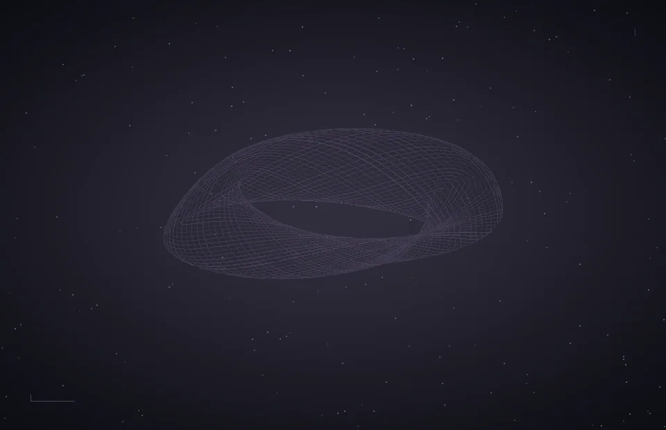
EXPEDITION / 24SIX WORLDS WITHOUT EDGESLIMEN — INFINITY GARDEN
경계가 사라지는 정원
호흡하는 구체부터 뫼비우스 곡면, 프랙털 나무, 직접 잇는 별자리까지 여섯 정원을 탐험합니다.
세계로 입장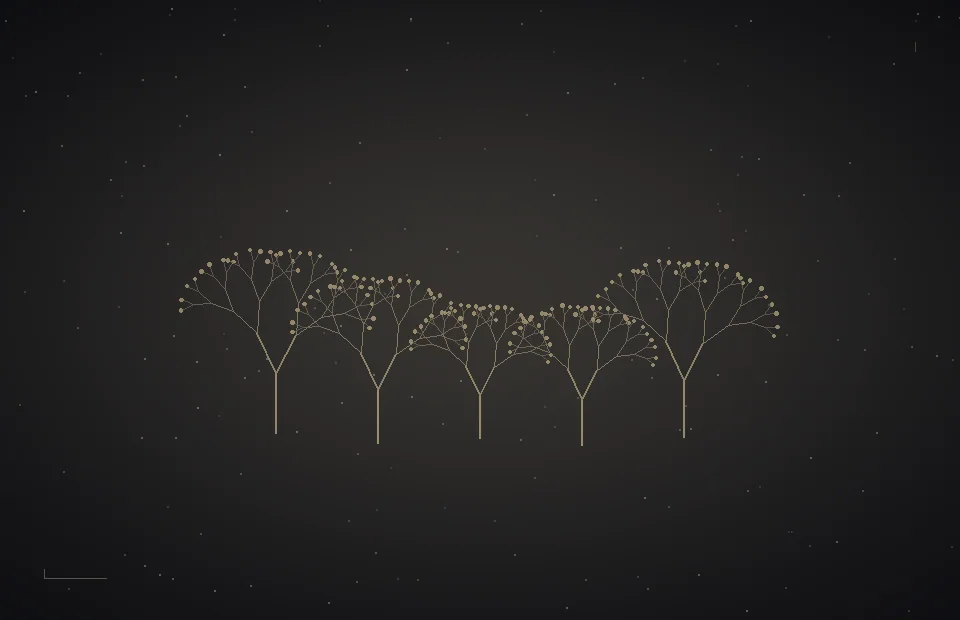
EXPEDITION / 25SEEDS OF LIGHTLUMEN
빛의 기억
빛의 씨앗이 나무로 피어났다가 별이 되는 정원. 시간대의 색과 지난 방문의 기억을 간직합니다.
세계로 입장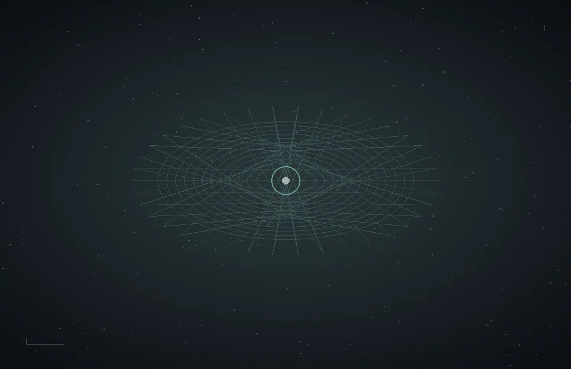
EXPEDITION / 26THE LIVING MIRRORMIRROR — REACTION
당신이 만드는 거울
손끝을 따라 Gray–Scott 반응·확산 무늬가 생겨나고, 일곱 장면에서 기억과 고요를 경험합니다.
세계로 입장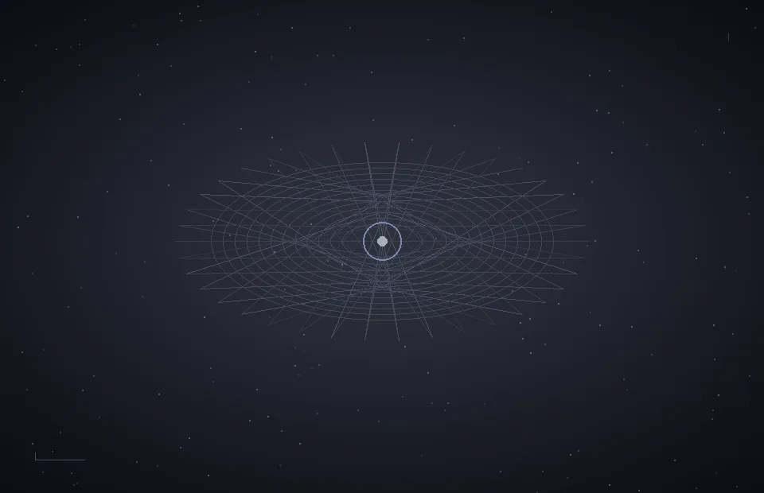
EXPEDITION / 27THE OBSERVER EFFECTOBSERVER
관찰자
화면에 별을 심으며 하나의 우주를 만들고, 이번 방문만의 서명과 마지막 장면을 만나봅니다.
세계로 입장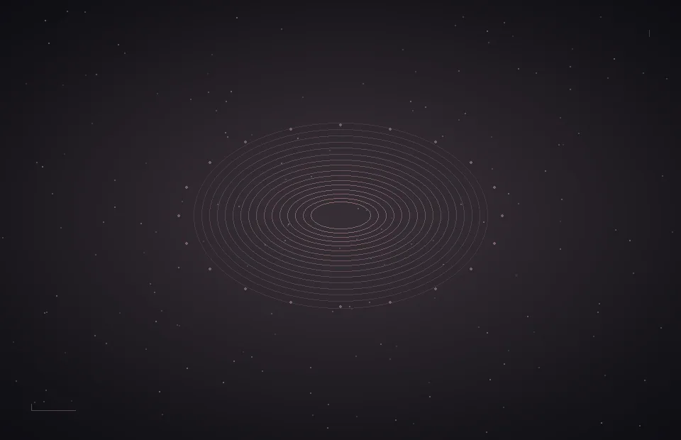
EXPEDITION / 28SIX CHAPTERS OF YOUPHENOMENON — SIX
당신이라는 현상 · 여섯 장
호흡·시간·생명·문자 별빛을 차례로 지나며 지금 여기에 있는 자신의 순간을 바라봅니다.
세계로 입장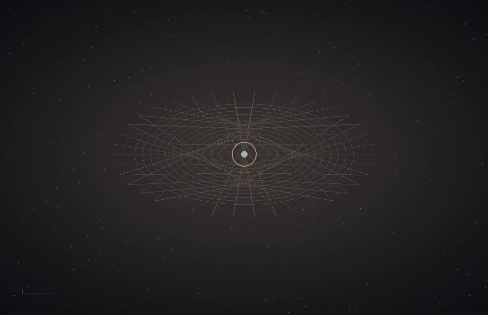
EXPEDITION / 29EIGHT CHAPTERS OF PRESENCEPHENOMENON — EIGHT
당신이라는 현상 · 여덟 장
어둠·첫 빛·시간·기억·호흡·관찰자·하나·끝, 여덟 장에서 보는 자와 보이는 자를 탐색합니다.
세계로 입장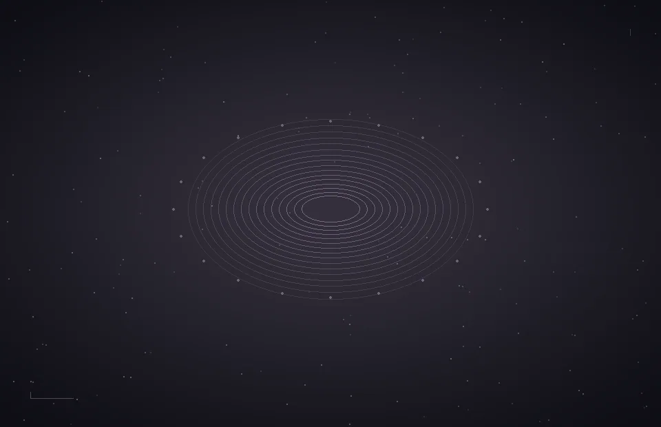
EXPEDITION / 30THE UNHURRIED MOMENTPHENOMENON — REFLECTION
당신이라는 현상 · 성찰
느린 호흡과 추정 시간, 나선형 생명, 이름으로 그려지는 우주를 거쳐 하나의 장면을 남깁니다.
세계로 입장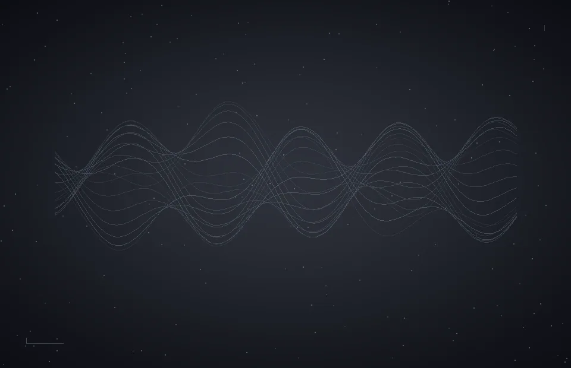
EXPEDITION / 31THE SPACE BETWEEN MOMENTSSAI — THE INTERVAL
숨과 숨 사이
호흡·생각·시간·타인·자아의 간격을 통과하며 방문 기록으로 짧은 시와 별자리를 완성합니다.
세계로 입장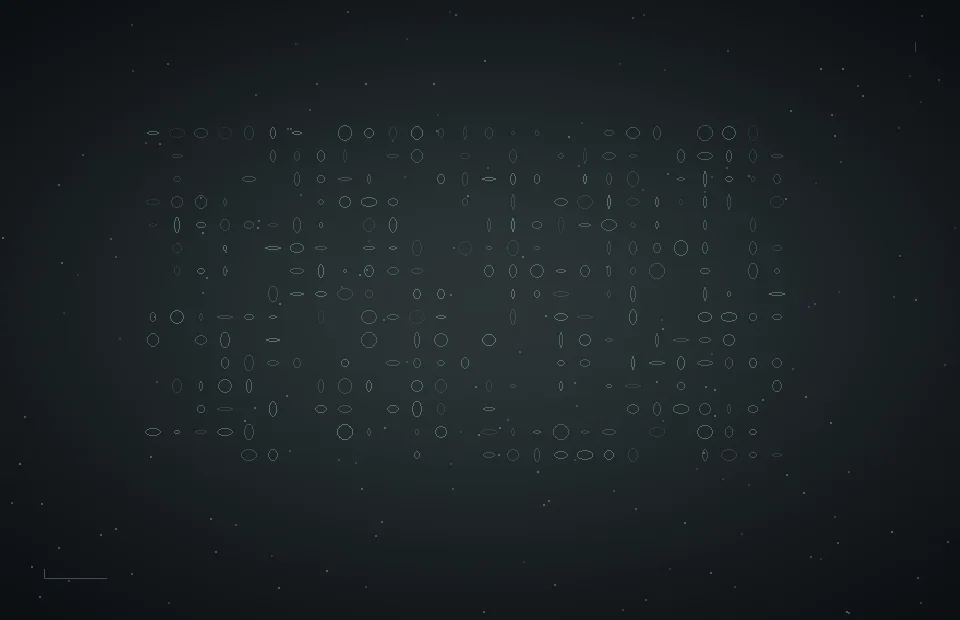
EXPEDITION / 32FOUR ROOMS OF SENSINGSENTIO
당신을 기억하는 풍경
시간 물결, 콘웨이 생명게임, 움직이는 만다라, 지연·반전된 인식점을 네 개의 방에서 탐험합니다.
세계로 입장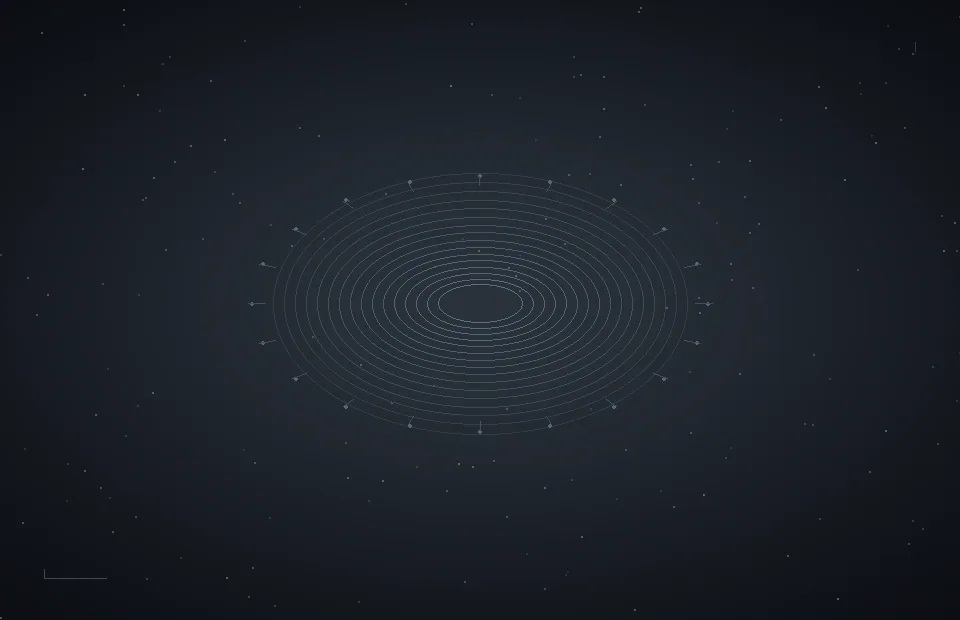
EXPEDITION / 33THE SIX CHAMBERSTHE OBSERVATORY
관측소
우주와 생명, 마음과 질문을 여섯 장면으로 내려가며 살펴보는 시적 관측소입니다.
세계로 입장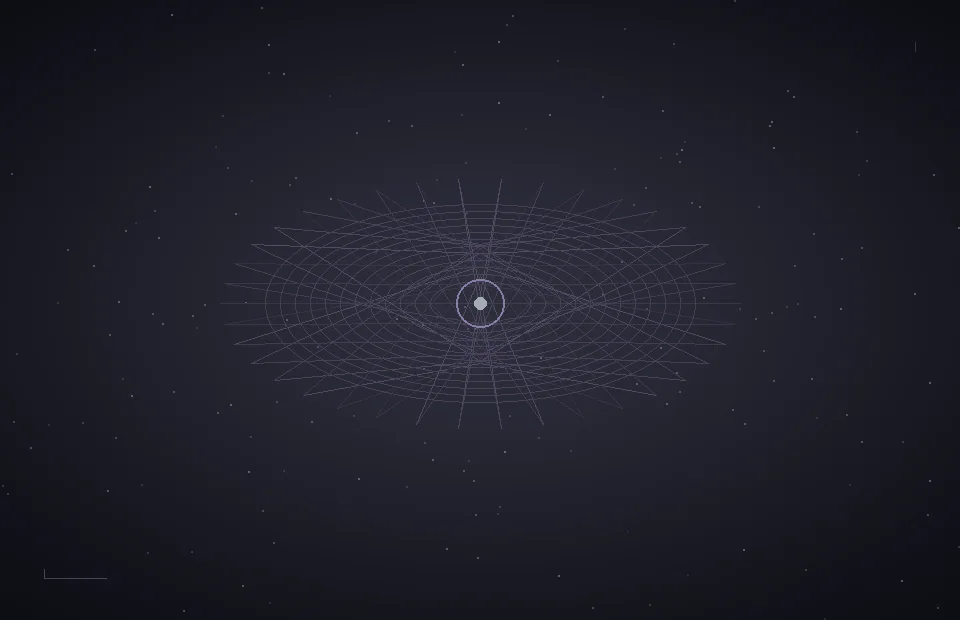
EXPEDITION / 34TRACES ACROSS VISITSTHE OBSERVER — AFTERGLOW
관찰자 · 일곱 막
입력이 빛과 궤적이 되는 일곱 막. 현재의 별자리와 지난 방문의 흔적이 겹쳐집니다.
세계로 입장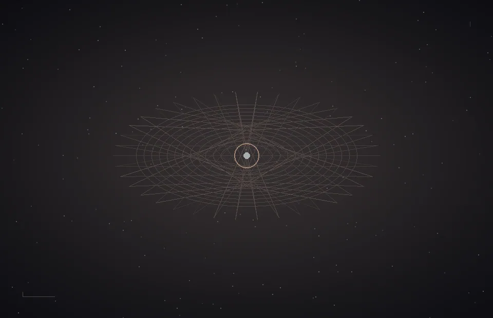
EXPEDITION / 35LOOKING AT THE LOOKERMIRROR — SEVEN QUESTIONS
거울 · 읽는 동안 읽히는 경험
단어를 지우고, 시간·주의·자아·침묵을 거쳐 움직임으로 생성된 세션 초상화를 만납니다.
세계로 입장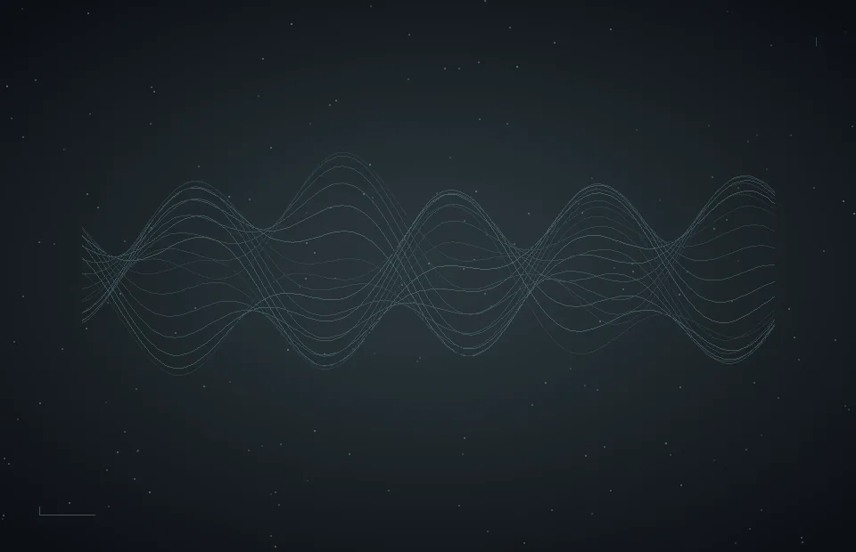
EXPEDITION / 36NINE SECONDS OF STILLNESSMIRROR ROOM
거울 · 고요의 흔적
손끝에 반응하는 확산 무늬를 남기고 9초의 고요함 뒤에 움직임의 거울을 확인합니다.
세계로 입장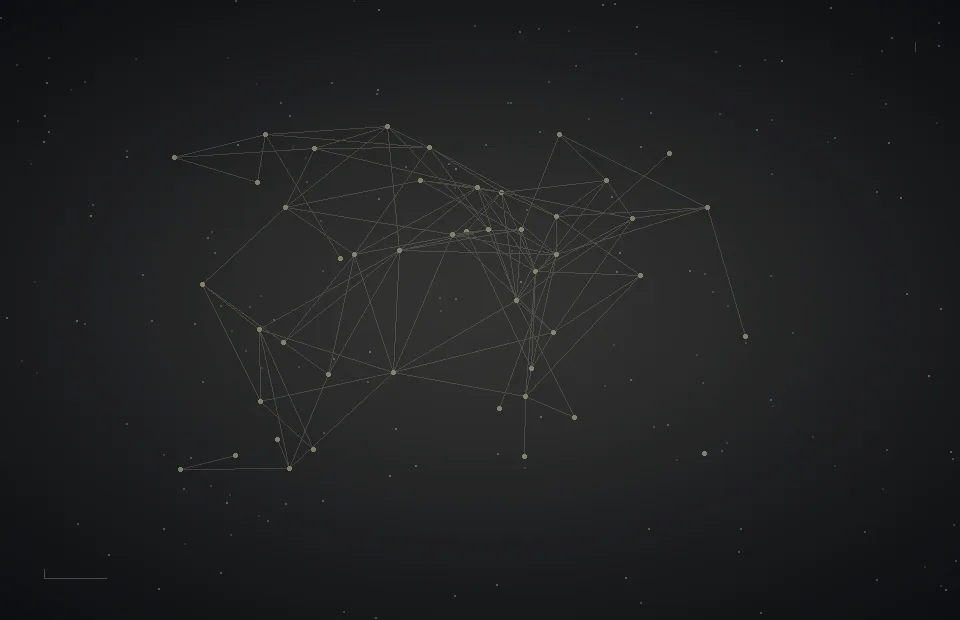
EXPEDITION / 37SEVEN EXPERIENCES OF THE UNSEENSAI
보이지 않는 것들의 정원
숨·시간·생명·인식·연결·비움·귀환의 일곱 실험에서 새로운 관계와 시선을 발견합니다.
세계로 입장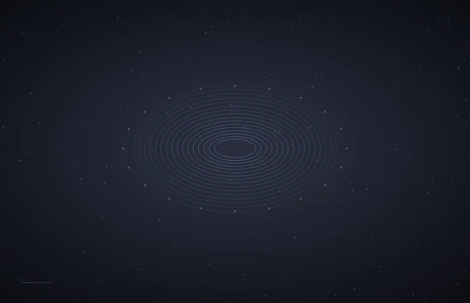
EXPEDITION / 38SEVEN CHAPTERS OF EXISTENCETHE UNIVERSE CALLED YOU
당신이라는 우주 · 일곱 장
부재·시간·반복·관찰·마음·타인·침묵을 따라 테세우스의 배와 존재의 질문을 탐험합니다.
세계로 입장이 좌표에는 아직 세계가 없습니다.
다른 단어를 입력하거나 필터를 초기화해보세요.
여기서 끝내지
마세요.
다음 세계는 순서가 아니라 호기심이 결정합니다.